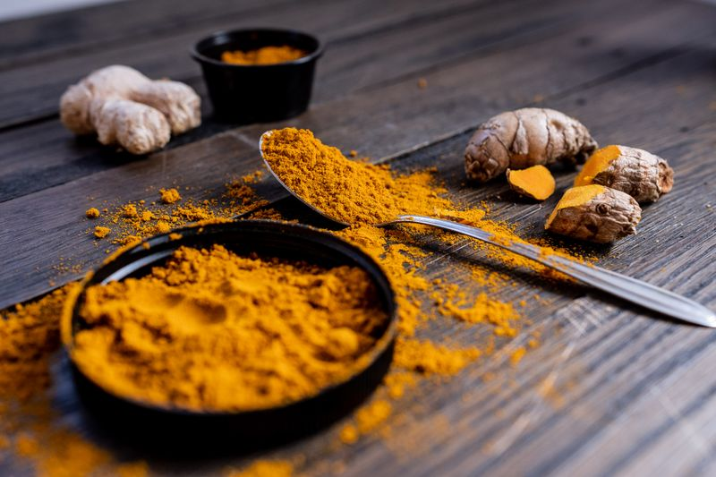
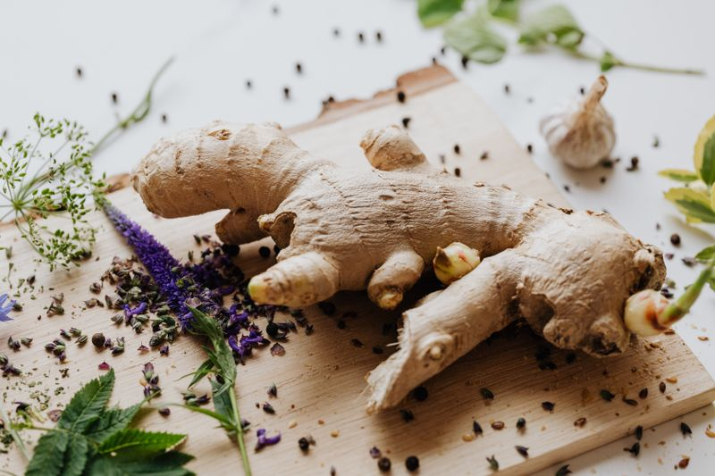
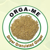

Gingcuci — Ginger Blend






Gingcuci is our signature ginger-based blend combining premium dried ginger root with zesty lemon peel and natural granules to create a warming, bright infusion that delights the senses. Prepared in small batches using time-honored techniques, this blend balances the spice and warmth of ginger with refreshing citrus notes for a comforting cup any time of day. The ingredients are sourced from local farmers in Togo and Senegal, ensuring the highest quality and supporting sustainable agricultural practices.
Our ginger is harvested at peak maturity, then peeled, sliced, and slow-dried to preserve volatile oils and active compounds. The lemon peel comes from organic Senegalese citrus, and the granules are produced through traditional grinding that maintains fiber structure while releasing aromatic oils. These components are blended in precise ratios to ensure consistent flavor and therapeutic value in every batch.
Health Benefits & Body Support
Ginger, the cornerstone of Gingcuci, contains gingerols and shogaols that provide anti-inflammatory benefits throughout the body. Regular consumption supports digestion, soothes occasional nausea, and promotes circulation. The lemon component adds vitamin C and bioflavonoids for cardiovascular and immune support. Gingcuci also supports joint health, muscle recovery, and mental clarity by improving blood flow.
How to Prepare
Steep one heaping teaspoon of Gingcuci blend in 8 oz of hot water for 5-10 minutes. Strain and enjoy hot or iced. Add honey or natural sweeteners to taste. Consume once to twice daily.
Ingredients
Dried ginger root (Zingiber officinale), dried lemon peel, natural ginger granules — No additives, no preservatives, no artificial flavors.